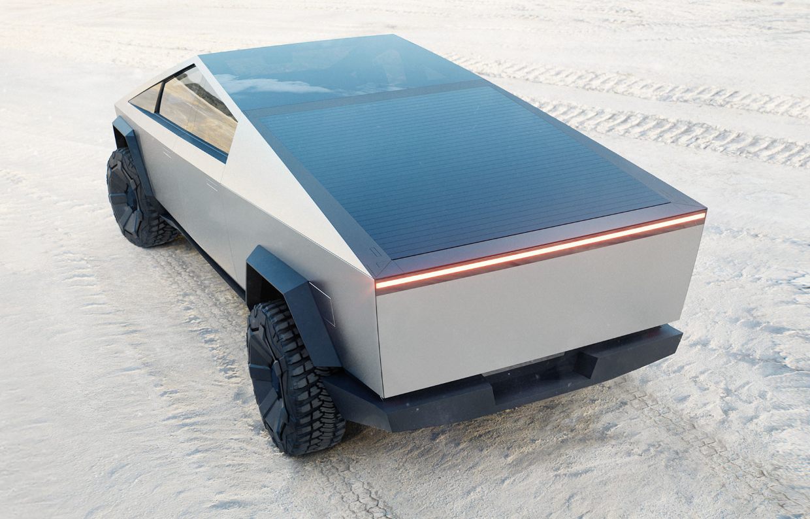
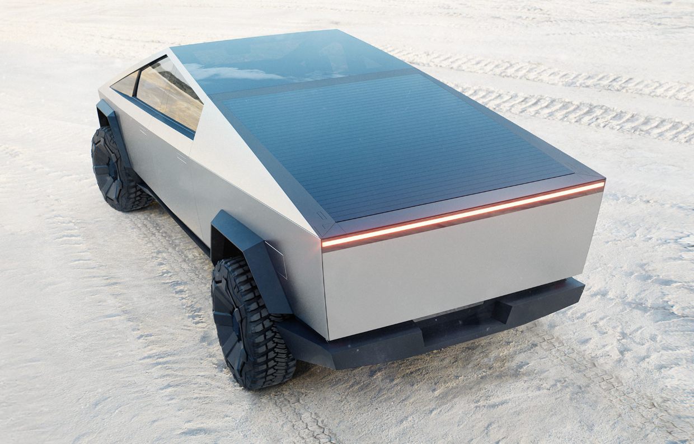
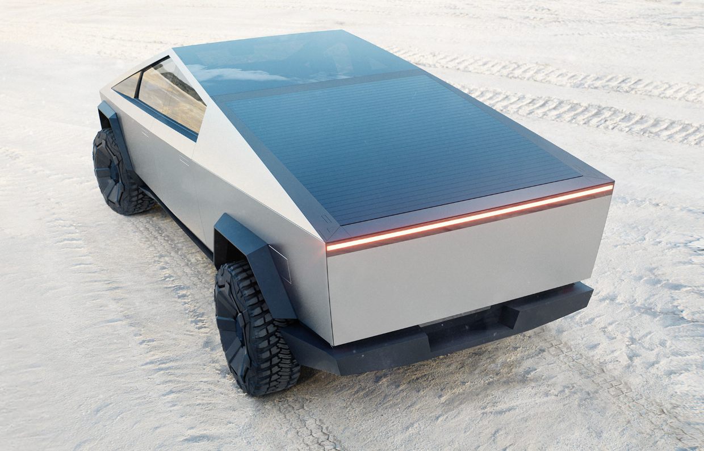
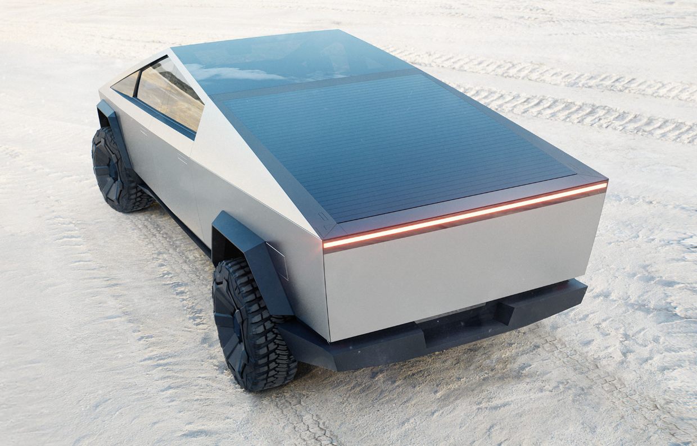

The Tesla Cybertruck is a battery electric light-duty truck announced by Tesla, Inc. in 2019. Three models have been announced, with EPA range estimates of 400–800 kilometers (250–500 mi) and an estimated 0–100 km/h (0–62 mph) time of 2.9–6.5 seconds, depending on the model. The stated goal of Tesla in developing the Cybertruck is to provide a sustainable energy substitute for the roughly 6,500 fossil-fuel-powered trucks sold per day in the United States.